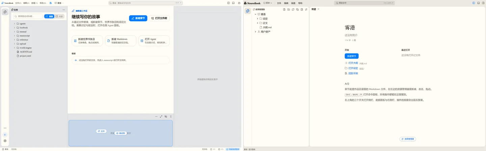
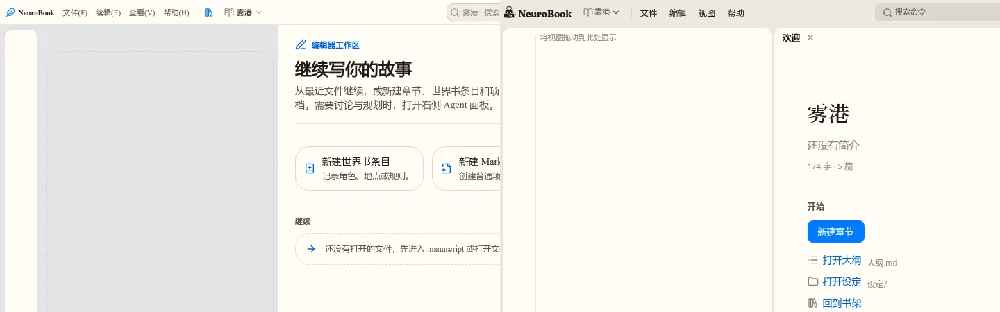
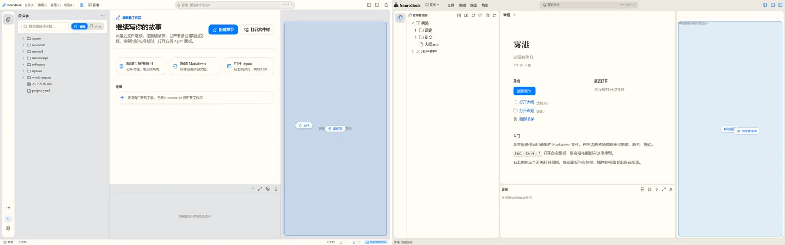
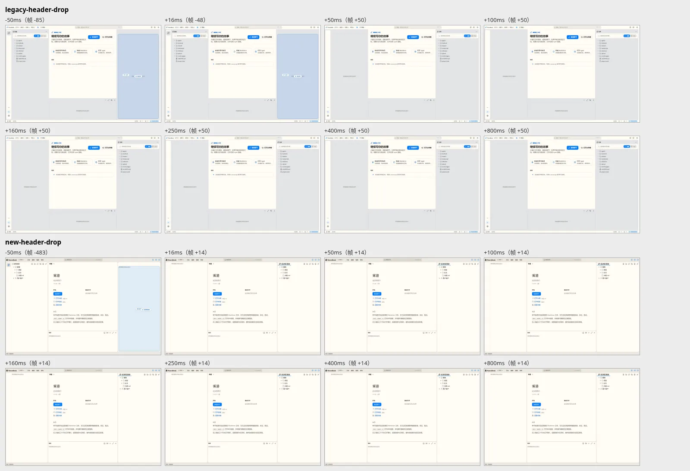
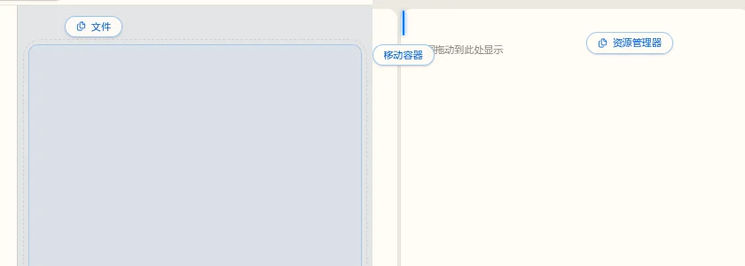
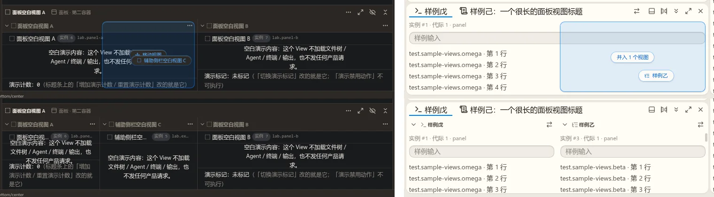
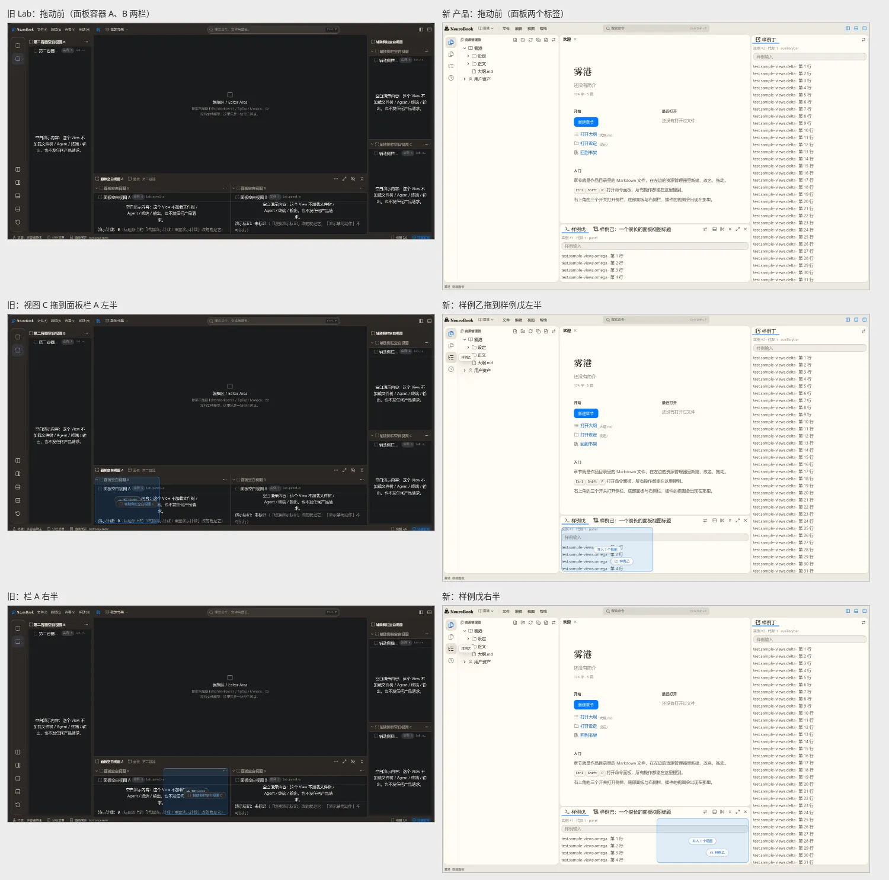
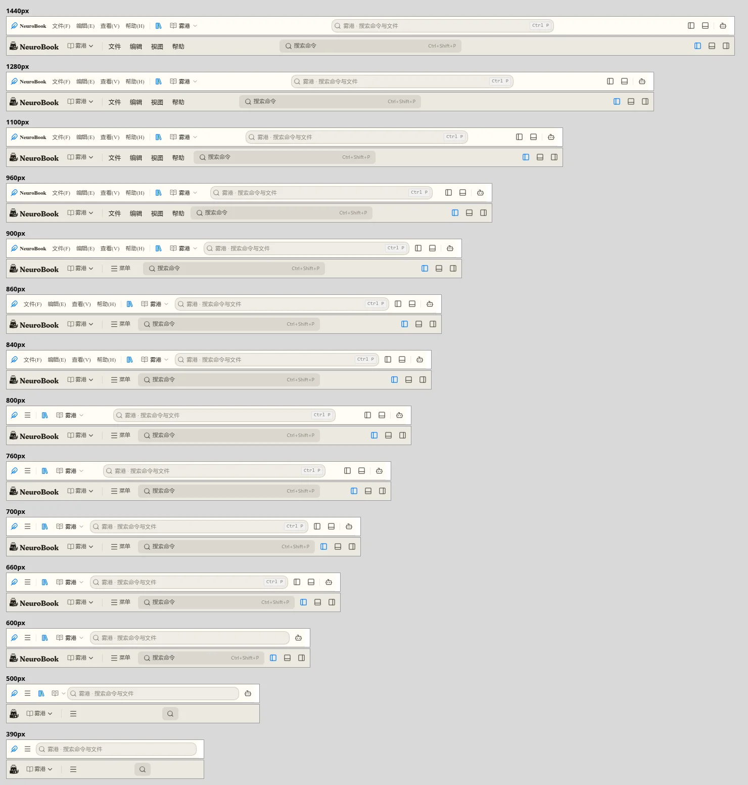
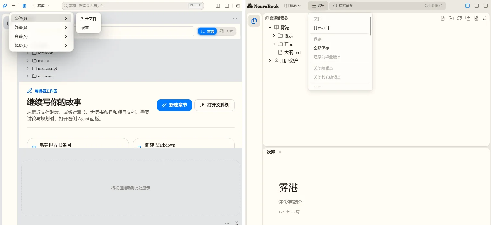

拖放与标题栏：新旧应用差距
DropFeedbackOverlay 两边只差 z-index），淡入与换目标时的过渡两边都有，松手后两边都没有动画。新应用“没有落点指示”的主要原因是默认布局里根本没有可放的地方：空着的右栏与面板缺省不显示（Spec 输出 39），拖资源管理器全程只有拖影。其次是空区域不像落点、高亮偏浅。面板里多个容器、容器内分栏、拖到半区并入，新应用都有且与旧应用一致（D6），只是新产品里只有一个视图，体验不到。标题栏旧应用是逐级让位、搜索占满中间，新应用只有三档。多级菜单在旧应用里只出现在窄宽度的收拢菜单。
一、移动视图与容器
D1 默认布局里没有可放的地方（最主要）
新应用Spec ui/workbench-shell.md 输出 39 规定空着的右栏与面板缺省不显示。产品里只有资源管理器一个视图容器，它所在的活动栏和侧栏是原位，所以默认布局下拖它，整个过程看不到任何落点。旧应用面板与右栏默认显示，是两块“将视图拖动到此处显示”的空区，拖进去整块高亮并提示“移动容器”。

可选做法：
- a（推荐）：拖动开始时，把隐藏的空右栏与面板临时显示成落点（淡入并让出位置）；放进去就留下，取消或放到别处就收回。保留输出 39 的整洁默认，又有地方可放。“动画”也可以加在这里。
- b：撤销输出 39，空右栏与面板默认显示（同旧应用）。
- c：编辑区边缘出现“放到右栏”“放到面板”的投放带（类似 VS Code 拖编辑器时的分屏区）。
D2 空区域不像落点
旧应用的空 Part 是整块虚线框、文字居中；新应用只在左上角有一行小灰字，空着的侧栏看起来像没加载好。

建议：空 Part 的占位改为整块虚线框、文字居中。
D3 高亮偏浅
同一个覆盖层，同一种半透明蓝。旧应用的底是灰的，叠上去明显变深（实测像素 227,228,230 → 199,215,233）；新应用 nbook 的卡片是象牙白，叠出来很浅（255,252,245 → 224,236,246）。

建议：nbook 主题下把落点高亮加深一档（覆盖层的颜色走主题变量，只改 nbook 的值），或加粗区域描边。
D4 放下与换目标的动画：两边一样
覆盖层淡入、换目标时区域与提示的过渡两边相同（同一个组件）。松手后两边都是直接换成新布局；旧应用跟手的拖影也关掉了落下动画（drop-animation 为 null）。所以在新应用里看不到动画，是因为默认布局下落点出不来（D1）。

要不要新增“放下后布局过渡”（部件滑入、让位）由你定：旧应用没有，属于新增。
D5（小）空右栏顶部
旧应用把整块空右栏当落点；新应用顶部是标签带，画插入线，提示药丸压在线上。两种都能放，可以不改。

D6 面板里的分栏：两边都有，新产品里看不到
面板的标签带是 Switcher，每个标签是一个 ViewContainer；容器里有多个视图时横排成多栏，每栏有自己的标题、收起箭头与菜单。把视图拖到某一栏的前半或后半，高亮那一半，松手后插成新的一栏，命中的那栏让出一半（Spec 输出 16、20、21）。
对照方式：旧应用用 Lab 的“多容器单选”场景（面板容器 A、B 两栏，右栏两个视图上下分栏）；新应用用 e2e 的测试插件起了一个带六个样例视图的服务（侧栏三个、右栏一个、面板两个标签）。新产品本身只有“资源管理器”一个视图，所以平常拖不出分栏。


结论：分栏、半区预览、标签带插入线、右栏上下分栏的落点两边都有，行为一致。差别只在新产品里没有第二个视图，体验不到；这和 D1 是同一个原因，等以后有更多视图（大纲、Agent 等）进来就会出现。
二、标题栏宽度自适应

| 宽度 | 旧应用 | 新应用 |
|---|---|---|
| ≥ 960 | 品牌字、完整菜单、书架、项目 | 横排标志、项目、完整菜单 |
| 860–900 | 先收品牌字（只留图标），菜单仍完整 | 菜单收成“≡ 菜单”，横排标志保留 |
| ≤ 800（840 展开，有回差） | 菜单收成 ≡ 图标 | 同上 |
| 600 | 收快捷键提示与侧栏、面板两个布局按钮（Agent 留着） | 不变 |
| < 600 | 500 项目名只留图标；390 收书架与项目切换；搜索始终是可输入的长条 | 标志换图形；菜单只留图标；搜索变图标按钮；三个布局按钮全没 |
| 搜索 | 占满中间剩余（1440 时约 440px） | 最宽 360px，居中 |
差距：新应用宁可先收菜单也保留完整标志；搜索不随宽度伸缩；600 以下一次收掉太多（布局按钮、搜索输入）；档位没有回差，窗口宽在 960 附近来回拖会跳。
建议：按优先级逐级让位：横排标志换成图形 → 菜单收成 ≡ → 收快捷键提示 → 收布局按钮 → 项目名只留图标；搜索取中间的剩余宽度（设上限，例如 560px）；每档加回差。
三、多级菜单
旧应用四个顶层菜单本身是平的（文件 2 项、编辑 6 项、查看 1 项、帮助 2 项）。多级只出现在窄宽度的 ≡ 收拢菜单里：四组各是一个子菜单，悬停展开。新应用的收拢菜单把四组摊成一整列 36 行（组名做小标题），浮层约 240px 高，要滚动才找得到“视图”的项。

- M1：收拢菜单改成按组的子菜单。nb-ui 的
Menubar与Dropdown已经支持children级联，现在的菜单模型（titlebar/menu-model.ts）没用上。 - M2（顺带，可选）：新应用“视图”里的“面板位置”“切换主题”“切换明暗”“切换界面语言”适合做成带单选标记的子菜单。旧应用没有这些项。
要你定的
- D1 选 a、b 还是 c（推荐 a）。
- D2 空区域改成虚线框、文字居中（推荐做）。
- D3 nbook 下加深落点高亮（推荐做）。
- D4 是否新增放下后的布局过渡（旧应用没有；推荐先不做，D1 做完再看）。
- 标题栏的让位顺序与“搜索占满中间”（推荐按上面的顺序，搜索上限 560px）。
- M1 做；M2 要不要顺带做。